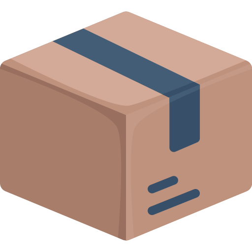

Documentation Librarie Tina_TOOLS (JavaScript) - Lana_REG.js

Disponibilité - Librairie nécessaire
- Disponibilité : Windows, linux
- Librairie : Librarie regedit, et child_process
Description de ce fichier :
- Description : permet de regroupper des fonction pour géré les Registre...
Méthode, Function, etc...
Lana_READ_A_KEY()
Paramètre : key - Attend la cle de registre a lire.
Exemple d'utilisation :
const Lana_REG = require('./Lana_REG');
const lv = new Lana_REG();
const keyPath = "HKCU\\Software\\Microsoft\\Windows\\CurrentVersion\\Run";
lv.Lana_READ_A_KEY(keyPath);
// node test.js
Lana_CREATE_KEY_AND_ADD_VALUE()
Paramètre : parentKey - Attend la cle de registre.
Paramètre : valuee - Attend la valeur a entre dans la cle.
Paramètre : namekey - Attend un nom pour la cle à ajouter.
Exemple d'utilisation :
const Lana_REG = require('./Lana_REG');
const lv = new Lana_REG();
const keyPath = "HKCU\\Software\\Microsoft\\Windows\\CurrentVersion\\Run";
lv.Lana_CREATE_KEY_AND_ADD_VALUE(keyPath, "C:\\Youtube.exe", "h");
// node test.js
Lana_DELET_KEY_REGISTER()
Paramètre : parentKey - Attend la cle de registre.
Paramètre : namekey - Attend un le nom de clé à suprimmer.
Exemple d'utilisation :
const Lana_REG = require('./Lana_REG');
const lv = new Lana_REG();
const keyPath = "HKCU\\Software\\Microsoft\\Windows\\CurrentVersion\\Run";
lv.Lana_DELET_KEY_REGISTER(keyPath, "h");
// node test.js